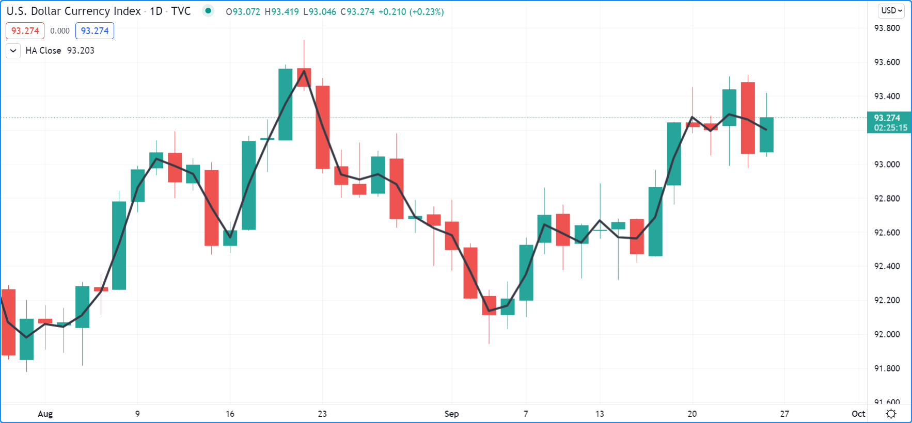
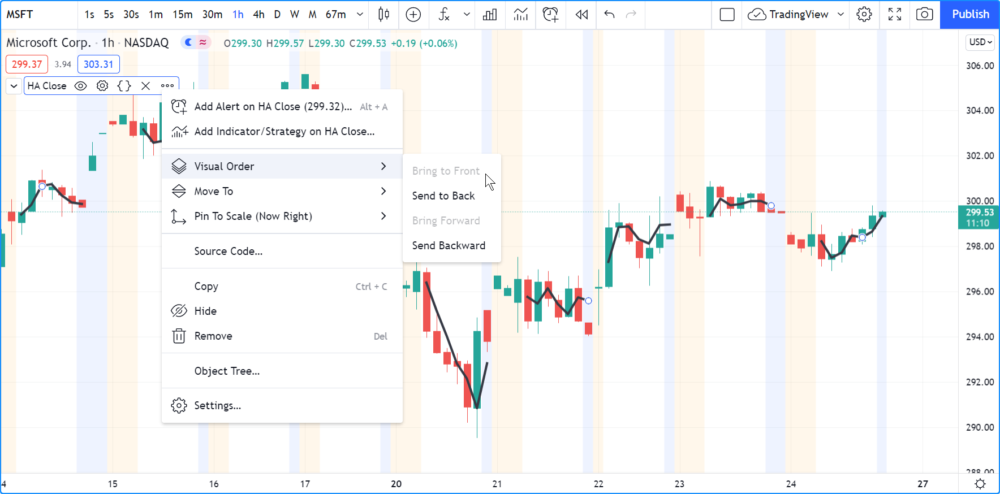
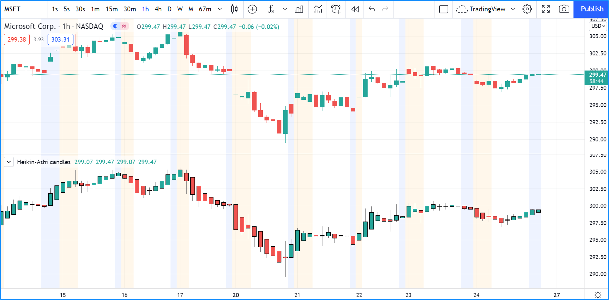

Non-standard charts data¶
Introduction¶
These functions allow scripts to fetch information from non-standard bars or chart types, regardless of the type of chart the script is running on. They are: ticker.heikinashi(), ticker.renko(), ticker.linebreak(), ticker.kagi() and ticker.pointfigure(). All of them work in the same manner; they create a special ticker identifier to be used as the first argument in a request.security() function call.
`ticker.heikinashi()`¶
Heikin-Ashi means average bar in Japanese. The open/high/low/close values of Heikin-Ashi candlesticks are synthetic; they are not actual market prices. They are calculated by averaging combinations of real OHLC values from the current and previous bar. The calculations used make Heikin-Ashi bars less noisy than normal candlesticks. They can be useful to make visual assessments, but are unsuited to backtesting or automated trading, as orders execute on market prices — not Heikin-Ashi prices.
The ticker.heikinashi() function creates a special ticker identifier for requesting Heikin-Ashi data with the request.security() function.
This script requests the close value of Heikin-Ashi bars and plots them on top of the normal candlesticks:
//@version=5
indicator("HA Close", "", true)
haTicker = ticker.heikinashi(syminfo.tickerid)
haClose = request.security(haTicker, timeframe.period, close)
plot(haClose, "HA Close", color.black, 3)
Note that:
- The close values for Heikin-Ashi bars plotted as the black line are very different from those of real candles using market prices. They act more like a moving average.
- The black line appears over the chart bars because we have selected “Visual Order/Bring to Front” from the script’s “More” menu.
If you wanted to omit values for extended hours in the last example, an intermediary ticker without extended session information would need to be created first:
//@version=5
indicator("HA Close", "", true)
regularSessionTicker = ticker.new(syminfo.prefix, syminfo.ticker, session.regular)
haTicker = ticker.heikinashi(regularSessionTicker)
haClose = request.security(haTicker, timeframe.period, close, gaps = barmerge.gaps_on)
plot(haClose, "HA Close", color.black, 3, plot.style_linebr)
Note that:
- We use the ticker.new() function first, to create a ticker without extended session information.
- We use that ticker instead of syminfo.tickerid in our ticker.heikinashi() call.
- In our request.security() call,
we set the
gapsparameter’s value tobarmerge.gaps_on. This instructs the function not to use previous values to fill slots where data is absent. This makes it possible for it to return na values outside of regular sessions. - To be able to see this on the chart, we also need to use a special
plot.style_linebrstyle, which breaks the plots on na values.
This script plots Heikin-Ashi candles under the chart:
//@version=5
indicator("Heikin-Ashi candles")
CANDLE_GREEN = #26A69A
CANDLE_RED = #EF5350
haTicker = ticker.heikinashi(syminfo.tickerid)
[haO, haH, haL, haC] = request.security(haTicker, timeframe.period, [open, high, low, close])
candleColor = haC >= haO ? CANDLE_GREEN : CANDLE_RED
plotcandle(haO, haH, haL, haC, color = candleColor)
Note that:
- We use a tuple with request.security() to fetch four values with the same call.
- We use plotcandle() to plot our candles. See the Bar plotting page for more information.
`ticker.renko()`¶
Renko bars only plot price movements, without taking time or volume into consideration. They look like bricks stacked in adjacent columns [1]. A new brick is only drawn after the price passes the top or bottom by a predetermined amount. The ticker.renko() function creates a ticker id which can be used with request.security() to fetch Renko values, but there is no Pine Script® function to draw Renko bars on the chart:
//@version=5
indicator("", "", true)
renkoTicker = ticker.renko(syminfo.tickerid, "ATR", 10)
renkoLow = request.security(renkoTicker, timeframe.period, low)
plot(renkoLow)
`ticker.linebreak()`¶
The Line Break chart type displays a series of vertical boxes that are based on price changes [1]. The ticker.linebreak() function creates a ticker id which can be used with request.security() to fetch “Line Break” values, but there is no Pine Script® function to draw such bars on the chart:
//@version=5
indicator("", "", true)
lineBreakTicker = ticker.linebreak(syminfo.tickerid, 3)
lineBreakClose = request.security(lineBreakTicker, timeframe.period, close)
plot(lineBreakClose)
`ticker.kagi()`¶
Kagi charts are made of a continuous line that changes directions. The direction changes when the price changes [1] beyond a predetermined amount. The ticker.kagi() function creates a ticker id which can be used with request.security() to fetch “Kagi” values, but there is no Pine Script® function to draw such bars on the chart:
//@version=5
indicator("", "", true)
kagiBreakTicker = ticker.linebreak(syminfo.tickerid, 3)
kagiBreakClose = request.security(kagiBreakTicker, timeframe.period, close)
plot(kagiBreakClose)
`ticker.pointfigure()`¶
Point and Figure (PnF) charts only plot price movements [1], without taking time into consideration. A column of X’s is plotted as the price rises, and O’s are plotted when price drops. The ticker.pointfigure() function creates a ticker id which can be used with request.security() to fetch “PnF” values, but there is no Pine Script® function to draw such bars on the chart. Every column of X’s or O’s is represented with four numbers. You may think of them as synthetic OHLC PnF values:
//@version=5
indicator("", "", true)
pnfTicker = ticker.pointfigure(syminfo.tickerid, "hl", "ATR", 14, 3)
[pnfO, pnfC] = request.security(pnfTicker, timeframe.period, [open, close], barmerge.gaps_on)
plot(pnfO, "PnF Open", color.green, 4, plot.style_linebr)
plot(pnfC, "PnF Close", color.red, 4, plot.style_linebr)
Footnotes
| [1] | (1, 2, 3, 4) On TradingView, Renko, Line Break, Kagi and PnF chart types are generated from OHLC values from a lower timeframe. These chart types thus represent only an approximation of what they would be like if they were generated from tick data. |